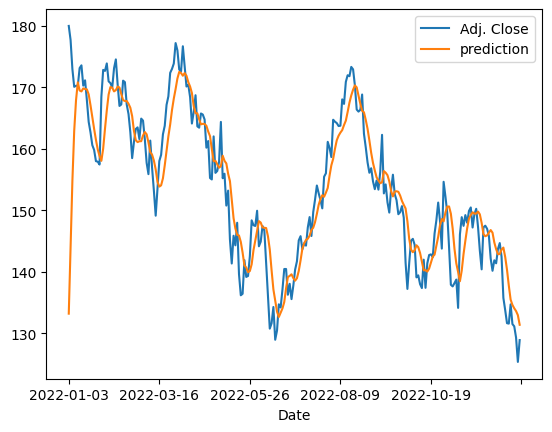

Predicting Lifespan and Detecting Defects in Alloys Using Machine Learning
This project explores machine learning methods for predicting alloy lifespan and identifying defects through regression, classification, image analysis, and clustering.
Project Details
The project explores leveraging machine learning techniques to enhance the prediction of alloy lifespan and the detection of defects in newly produced alloys. It focuses on four primary tasks: regression to forecast lifespan, classification to identify defective vs. non-defective alloys, convolutional neural networks (CNNs) for image-based defect detection, and clustering to group alloys based on their characteristics. Initial data exploration involved cleaning and preprocessing the dataset, followed by the implementation of regression models like Linear Regression, Lasso Regression, and Gradient Boosting Regressor, with Gradient Boosting yielding the highest accuracy.
For defect classification, Logistic Regression and Random Forest Classifier were employed, with Random Forest achieving superior results. In image classification, a CNN was used but faced challenges due to class imbalance. K-means clustering helped identify the optimal number of clusters for the data. The findings suggest that while the implemented models were effective, future improvements could be made by addressing data imbalance and refining the CNN architecture for better performance.
Image Gallery
 Comparing financial ratios for a sector in the financial market
Comparing financial ratios for a sector in the financial market
 Using bollinger bands to determine entry and exit points
Using bollinger bands to determine entry and exit points

Predictions made using LSTM.